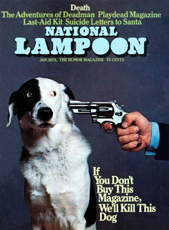
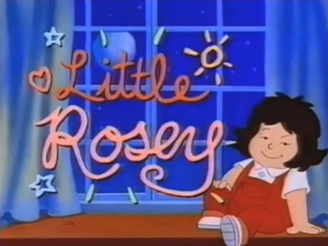
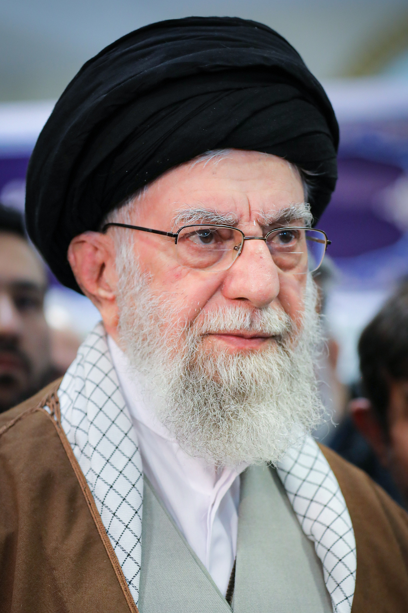

Cultural Influences
Throughout the years, the term and title Tom and Jerry became practically synonymous with never-ending rivalry, as much as the related "cat and mouse fight" metaphor has. Yet in Tom and Jerry it was not the more powerful Tom who usually came out on top. In 2005, TV Asahi ranked Tom and Jerry as 58th of the Top 100 Animated TV Series in Japan overall, outranking titles like Rurouni Kenshin, Initial D, and even Macross. In January 2009, IGN named Tom and Jerry as the 66th best in the Top 100 Animated TV Shows
In popular culture
National Lampoon
In 1973, the magazine National Lampoon referenced Tom and Jerry in a violence-filled comic book parody, Kit 'n' Kaboodle. In The Simpsons, The Itchy & Scratchy Show is a spoof of Tom and Jerry—a "cartoon within a cartoon". In an episode of the series titled "Krusty Gets Kancelled", Worker and Parasite, a replacement cartoon for Itchy & Scratchy, is a reference to Soviet-era animation.
Mad TV
In an interview found on the DVD releases, several Mad TV cast members stated that Tom and Jerry is one of their biggest influences for slapstick comedy. Also in the Cartoon Network show MAD, Tom and Jerry appear in three segments: "Celebrity Birthdays", "Mickey Mouse Exterminator Service", and "Tom and Jury". Johnny Knoxville from Jackass has stated that watching Tom and Jerry inspired many of the stunts in the films.
The Rosey and Buddy Show
Tom & Jerry made a cameo appearance in the 1992 animated TV special The Rosey and Buddy Show.
Ayatollah Khamenei
The supreme leader of Iran, Ayatollah Khamenei likened the rivalry between the United States and the Islamic Republic of Iran to Tom and Jerry, with the United States in the role of Tom and Iran in the role of Jerry.